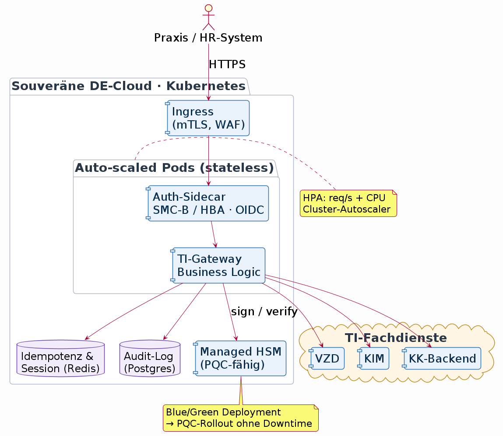

Digitale Gesundheitsplattformen und APIs
Architekturansätze für skalierbare e-Health Vernetzung am Beispiel der Telematikinfrastruktur
Dr. Fabian Franzelin · 2026-09-24
Probevortrag · W2 Vernetzte Systeme in der Medizin · Hochschule Reutlingen
Eine Nachricht, vier Perspektiven
"Deutschland wird immer häufiger krankgeschrieben."1
- Als Politiker: Was kann ich strukturell ändern?
- Als Arzt: Wie kann ich den Menschen helfen?
- Als Vater: Zum Glück sind meine aus dem Gröbsten raus.
- Als Informatiker: Wie skaliert das?
Einordnung: Mehr Daten, nicht nur mehr Krankheit
- Für 2024 berichtet die BKK 22,3 Arbeitsunfähigkeitstage je Beschäftigtem.2
- Der sichtbare Sprung seit 2022 hat mehrere Ursachen.
- Eine davon: Arbeitsunfähigkeitsdaten werden seit der elektronischen Krankmeldung vollständiger an die Krankenkassen übermittelt.
Überblick
- Die elektronische Arbeitsunfähigkeitsbescheinigung
- Architekturprinzipien der TI und TI 2.0
- APIs und Standards
- Skalierbarkeit: Lastschranken, Architektur, Verifikation
- Brücke zum englischen Vortrag
- Ausblick für die HS Reutlingen
Die elektronische Arbeitsunfähigkeitsbescheinigung
Eine eAU ist kein einzelnes Dokument, sondern ein verteilter Prozess:
- Praxissoftware erfasst und signiert die Bescheinigung.
- Die Krankenkasse erhält die für sie bestimmten Daten.3
- Der Arbeitgeber ruft die für ihn erforderlichen Daten ab.
- Jede Rolle erhält nur die Daten, die sie für ihren Zweck benötigt.
Als Informatiker würde ich schreiben…
Phase 1: Datenerhebung & Kassenmeldung

- Identität vor Zugriff (Arzt)
- Heterogene Primärsysteme (PVS, VZD, KIM)
- Ortsunabhängiger Zugriff
- Kommunikation über offene Netze
Phase 2: Krankmeldung via Bosch SAM App

- Identität vor Zugriff (Mitarbeiter)
- Unterschiedliche Rollen, unterschiedliche Datensichten
Phase 3: eAU-Abruf durch den Arbeitgeber

- Abruf an Person, Zeitraum und Zweck gebunden
- Asynchrone Übermittlung
- Mehrere Organisationen, eine Fachaufgabe
Architekturprinzipien der TI
- Die elektronische Arbeitsunfähigkeitsbescheinigung
- → Architekturprinzipien der TI und TI 2.0
- APIs und Standards
- Skalierbarkeit: Lastschranken, Architektur, Verifikation
- Brücke zum englischen Vortrag
- Ausblick für die HS Reutlingen
Architekturtreiber - Architekturprinzipien
| Beobachtung | Qualitätsanforderung | Architekturprinzip |
|---|---|---|
| Identität vor Zugriff | Datensicherheit | Zero Trust |
| Asynchrone Übermittlung | Verfügbarkeit | Hardware-Abstraktion & Cloud |
| Zugriff ortsunabhängig | Mobilität | Digitale Identitäten |
| Viele Organisationen/Systeme | Interoperabilität | Offene Standards & Open Source |
Prinzip 1: Zero Trust
Zero Trust beschreibt ein aus dem "Assume Breach"-Ansatz entwickeltes Architekturdesign-Paradigma, welches im Kern auf dem Prinzip der minimalen Rechte aller Entitäten in der Gesamtinfrastruktur basiert.4
Das beinhaltet:
- Jeder einzelne Zugriff muss authentifiziert werden
- Jeder einzelne Zugriff muss verschlüsselt werden
- Minimale Datenweitergabe → need-to-know Prinzip
- Die Berechtigungen sind kontextbezogen
Prinzip 2: HW-Abstraktion & Cloud
Welche kryptografischen Maßnahmen zum Schutz der Telematikinfra- struktur […], gegen Angriffe mithilfe von Quanten- computern sind derzeit implementiert, welche sind geplant, […]?5
Zentraler Dienst (TI-Gateway): Kryptoverfahren werden an einer Stelle gewechselt.
Prinzip 2: HW-Abstraktion & Cloud
Konsequenz für die Architektur:
- Ein zentraler Dienst (TI-Gateway)
- Hohe Last → horizontale Skalierung in der Cloud
- Redundanz und automatische Updates beim Betreiber
- Idempotente APIs
Architekturprinzip: Verfügbarkeit und Evolvierbarkeit entstehen durch Entkopplung von Hardware und Dienst.
Verfügbarkeit & Skalierbarkeit
- Die elektronische Arbeitsunfähigkeitsbescheinigung
- Architekturprinzipien der TI und TI 2.0
- APIs und Standards
- → Skalierbarkeit: Lastschranken, Architektur, Verifikation
- Brücke zum englischen Vortrag
- Ausblick für die HS Reutlingen
Schauen wir uns die eAU wieder an…
Annahmen:
- 46 Mio. Erwerbstätige in Deutschland im Jahr 20246
- 22,3 Arbeitsunfähigkeitstage je Beschäftigtem und Jahr2
- 6,3 Tage durchschnittliche Dauer eines Atemwegsfalls2
Im Mittel bei einem Zugriff pro eAU auf einen Arbeitstag (8h)
eAU ist die untere Schranke
Die eAU zeigt den Prozess — nicht die volle Last der Plattform.
| Anwendung | Volumen (Größenordnung) | Charakter |
|---|---|---|
| eAU | ca. 163 Mio. Fälle/Jahr2 | asynchron, wenige Transaktionen/Fall |
| E-Rezept | ca. 500 Mio. Verordnungen/Jahr7 | synchron, Spitzen in Apotheken |
| ePA | 74 Mio. Versicherte, mehrere Zugriffe je Versorgungskontakt8 | häufige, feingranulare Zugriffe |
Konsequenz: Leitfall hilft beim Verständnis, die Architektur muss wesentlich mehr tragen.
Schranken für die Auslegungslast
Auslegung nach oberer Schranke, Kostenoptimierung nach unterer.
| Kennzahl | Wert | Herleitung |
|---|---|---|
| Untere Schranke (Tagesmittel) | ~15,5 req/s | 447 000 Fälle / 8 h |
| Peak-Faktor Wochentag/Tageszeit | ×3–5 | Montag/Vormittag |
| Peak-Faktor Infektwelle | ×5–10 | Grippe-/COVID-Saison |
| Transaktionen pro eAU-Fall | ×3–5 | Signatur, VZD, KIM, KK, Retry |
| Auslegungsbereich TI-Gateway (eAU) | ca. 200–1 000 req/s | Multiplikation Worst-Case |
Die obere Schranke ist bewusst konservativ: sie fängt gleichzeitiges Zusammentreffen von Wochentag, Saison und Fall-Fanout ab.
Und ePA/E-Rezept liegen noch einmal darüber.
Architekturskizze: TI-Gateway als elastischer Dienst

- Stateless Pods → lineare horizontale Skalierung
- Zustand ausgelagert (Redis: Idempotenz-Keys für Phase-3-Retry)
- Managed HSM entkoppelt Krypto-Rollout von der Anwendungslogik
- Betrieb in souveräner DE-Cloud (DSGVO, § 393 SGB V, C5)
Elastizität und rollierender Krypto-Wechsel
Ein zentraler Dienst muss zwei Dinge gleichzeitig können: mitwachsen und sich wandeln.
- Elastizität: HPA skaliert Pods entlang der oberen Schranke hoch, Cluster-Autoscaler fügt Nodes hinzu. Nach dem Peak wieder herunter — Kosten folgen der Last.
- Idempotenz: Der Retry aus Phase 3 des Leitfalls wird durch einen
Idempotency-Keyim Header eindeutig — mehrfacher Abruf, ein Effekt. - Rollierender PQC-Wechsel: Blue-Deployment mit klassischer Krypto bleibt aktiv, Green rollt hybride PQC aus. Traffic-Shift 10 % → 50 % → 100 %. Rollback in Sekunden — nicht in Monaten wie beim Konnektor-Rollout.
Visionär gedacht: Der Update-Zyklus einer nationalen Gesundheitsplattform wird von Firmware-in-Praxen auf Deployment-Pipeline im Rechenzentrum verlagert. Sicherheitsupdates werden zur Betriebsroutine.
Verifikation am Leitfall: Lasttest
Zahlen aus dem Modell werden erst durch Messung glaubwürdig.
Lastprofil aus der oberen Schranke, ausgeführt mit k6 gegen einen
Referenz-Cluster:
execution: local
script: eau_gateway_peak.js
scenario: ramp 200 → 1000 vus over 10m, hold 20m
checks.........................: 99.87% ✓ 1 798 342 ✗ 2 341
http_req_duration..............: avg=42ms p(95)=118ms p(99)=214ms
http_req_failed................: 0.13% ✓ 2 341 ✗ 1 798 342
iterations.....................: 1 800 683
vus............................: 1 000 min=200 max=1 000
▸ Autoscale-Ereignisse: 6 (Time-to-Scale p95: 38 s)
▸ Chaos: AZ-Ausfall Minute 12 → 0 verlorene Requests (Retry+Idempotenz)
- p99-Latenz < 250 ms auch bei 1 000 req/s
- 0 % Datenverlust bei simuliertem AZ-Ausfall dank Idempotenz-Keys
- Autoscaling reagiert schneller als der Anstieg der Peak-Kurve
Lehre und Forschung an der HS Reutlingen: Kapazitätsplanung, Chaos-Engineering und Observability sind hier keine Buzzwords, sondern Prüfsteine für die Tragfähigkeit einer Gesundheitsplattform.
Architekturfolgen
Aus dem eAU-Leitfall folgen konkrete Anforderungen:
- Skalierbarkeit: Spitzenlasten statt nur Tagesmittel verarbeiten.
- Verfügbarkeit: Teilstörungen dürfen den Prozess nicht dauerhaft blockieren.
- Fehlertoleranz: sichere Wiederholung und idempotente Verarbeitung.
- Datensparsamkeit: jede Rolle erhält nur zweckgebundene Daten.
- Evolvierbarkeit: versionierte APIs und kompatible Standards für heterogene Primärsysteme.
Brücke zum englischen Vortrag
- Die elektronische Arbeitsunfähigkeitsbescheinigung
- Architekturprinzipien der TI und TI 2.0
- APIs und Standards
- Skalierbarkeit: Lastschranken, Architektur, Verifikation
- → Brücke zum englischen Vortrag
- Ausblick für die HS Reutlingen
Zwei Ebenen desselben Stacks
- Diese Vorlesung: organisationsübergreifende Prozesse, Sekunden bis Minuten. Beispiel: eAU, eRezept, ePA.
- Ebene darunter: Gerät-zu-Gerät, im OP oder am Patienten, Millisekunden. Beispiel: SDC / IEEE 11073.
Ein vernetztes System in der Medizin ist nicht ein Protokoll, sondern eine kohärente Architekturhaltung über mehrere Ebenen.
Ausblick
- Die elektronische Arbeitsunfähigkeitsbescheinigung
- Architekturprinzipien der TI und TI 2.0
- APIs und Standards
- Skalierbarkeit: Lastschranken, Architektur, Verifikation
- Brücke zum englischen Vortrag
- → Ausblick für die HS Reutlingen
Forschungsrichtungen für die HS Reutlingen
Aus solchen Leitfällen ergeben sich praxisnahe Themen für Studium und Forschung:
- Interoperabilitäts- und Konformitätstests für FHIR-Profile,
- digitale Zwillinge zur Untersuchung von Last- und Fehlerszenarien,
- sichere, nachvollziehbare Kommunikation heterogener medizinischer Systeme.
Abschluss
Take-away Messages
- Eine eAU ist ein verteilter, organisationsübergreifender Prozess.
- Digitalisierung verbessert auch die Sichtbarkeit von Versorgungsdaten.
- Rund 447.000 eAU-Fälle pro Tag sind eine relevante, aber nur mittlere Größenordnung.
- Für die Architektur zählen Spitzenlast, Ausfallverhalten und mehrere Transaktionen pro Fall.
- APIs, Standards, Identitäten und Berechtigungen müssen gemeinsam entworfen werden.
Diskussion: Welche dieser Anforderungen ist bei einer digitalen Gesundheitsplattform am schwierigsten zu erfüllen und warum?
Backup slides
TI vs. Internet — ein Vergleich
| Dimension | Internet | TI 1.x | TI 2.0 (Zielbild) |
|---|---|---|---|
| Grundannahme | Offenes Netz, "assume hostile" | Geschlossenes Netz, Vertrauen durch Abschottung | Offenes Netz, Vertrauen durch Identität (Zero Trust) |
| Zugang | Jeder mit IP-Adresse | Nur über zugelassene Hardware (Konnektor, SMC-B, eHBA) | Digitale Identitäten, TI-Gateway als Dienst |
| Adressierung | DNS, IP, URL | KIM-Adressen, VPN-Tunnel in TI-Netz | Föderierte Identitäten, dienstorientiert |
| Identität | Optional (TLS-Zertifikat, Login je Dienst) | An Karte/Konnektor gebunden (Standort + Hardware) | An Person/Rolle gebunden, kontextbezogen |
| Sicherheit | Ende-zu-Ende auf Anwendungsebene (TLS, OAuth) | Netzwerksegmentierung + kryptographische Karten | Wechselseitige Authentifizierung je Request |
| Governance | IETF/W3C, dezentral, konsensbasiert | gematik, staatlich reguliert, Zulassungspflicht | gematik, offener für Standards (FHIR, OAuth/OIDC) |
| Standards | HTTP, TLS, JSON, OAuth | Eigene TI-Fachdienste + KIM, teils proprietär | HL7 FHIR, OAuth 2.0, OpenID Connect |
| Skalierung | Horizontal, global, CDN | Begrenzt durch Konnektor-Hardware pro Standort | Cloud-fähig, dienstorientiert |
| Ausfallverhalten | Best effort, redundante Pfade | Einzelner Konnektor = Single Point of Failure | Redundante Dienste, Direktkommunikation |
| Datenmodell | Anwendungsspezifisch | FHIR/CDA + Spezifika | FHIR-first |
Kernaussage: TI 1.x drehte das Internet-Paradigma um — Vertrauen durch ein abgeschottetes Parallelnetz mit Hardware-Ankern. TI 2.0 nähert sich wieder dem Internet-Modell an: offenes Netz, aber jede Anfrage wird über Identität, Rolle und Versorgungskontext geprüft. Das Netz ist offen wie das Internet, die Zugriffe sind streng wie in einem Fachnetz.